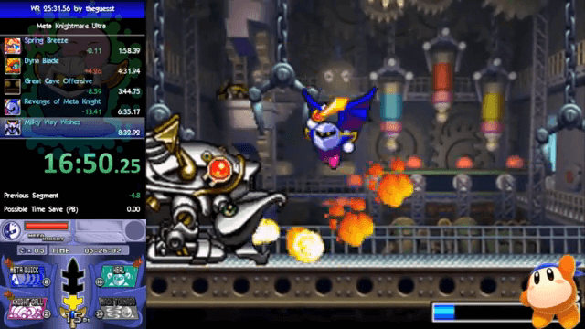
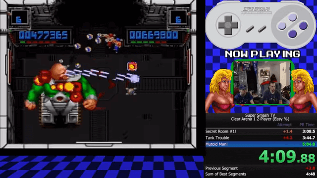
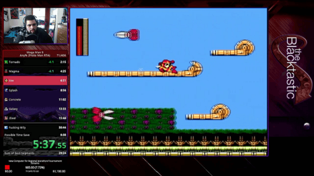
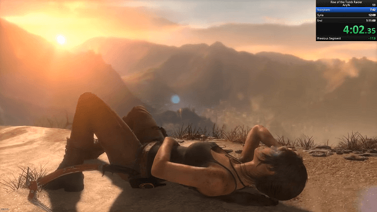
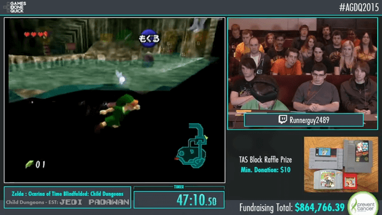

-
開幕式
Pre-Show
上映時間
6 月 25 日 (星期一) 00:30 AM
節目長度
30 分鐘
條件
Pre-Show%
導覽節目、倒數好朋友
跑者
SpikeVegeta, feasel, Protomagicalgirl, darkman78, JHobz
HYYYYYYYYYPE！
這次活動轉移到布盧明頓舉行！
認真玩遊戲 x 真心不豆 x 做效果？
一切 no 一切都從這裡再出發！
接下來會列出一些入選遊戲，
並簡單介紹一波！
-

星之卡比 超究極豪華版
Kirby: Super Star Ultra
上映時間
6 月 25 日 (星期一) 03:52 AM
節目長度
35 分鐘
條件
Meta Knightmare Ultra
魅塔騎士 GO DX
跑者
Kinnin11
終於輪到魅塔騎士登場囉！
除了有帥氣的銀色假面和翅膀披風外，
在本作中可經由殺敵集氣、放無雙技！
敵將，吾去脫他衣—！
[卡比] 無縫起飛
[卡比] 落賽融合
[卡比] 回天劍舞 & 地球上投
-
-
-
惡靈古堡 4
Resident Evil 4
上映時間
6 月 25 日 (星期一) 09:57 AM
節目長度
1 小時 40 分鐘
條件
New Game, Professional
一週目，專家難度
跑者
JTB
挖～是掰四！
作為三上真司的最後一款惡靈古堡作品，
在遊戲視角、QTE、動作和武器上，
營造出壓迫與爽快交織的節奏感！
寄生仔在狙擊鏡的反光中看到了…
愛旭莉推起來！
-
忍者外傳
Ninja Gaiden
上映時間
6 月 25 日 (星期一) 02:17 PM
節目長度
13 分鐘
條件
Any%
任意要素通關
跑者
Aquas
Ninja GAI-den! HYPE!!
隼流忍者──隼龍，將以超高級忍術、
極限精確的體術，一路殺入敵陣！
忍法．風車手裏劍！
AVGN 憤怒電玩宅 第 87 集 - 忍者龍劍傳
完美呈現忍外玩家的挑戰挫折和心路歷程，十分推薦！
[SGDQ 2017] 淡定忍外外 x 沙發好朋友
跑者 Soothingplumtea 用輕鬆、愜意的角度，展現出忍者沉著冷靜的最高境界（ˊ_>ˋ）
-
Gimmick!
上映時間
6 月 25 日 (星期一) 02:40 PM
節目長度
15 分鐘
條件
Any% Glitchless
普通結局，禁用巫術
跑者
Aquas
紅白機後期音樂表現的巔峰作品之一，
不過最令人期待的是，
可以藉由放出星星加速前進，
甚至能做出類似二段跳的效果，
用超靈活的方式收集道具，攻略關卡！
-
-

Super Smash TV
上映時間
6 月 25 日 (星期一) 08:33 PM
節目長度
38 分鐘
條件
Any % Normal 2 Player
[雙人合作] 普通難度通關
跑者
brisulph, JackimusWedge
非常經典的俯視角房間射擊游戲！
這次是雙人合作，
聯手擊退來自四面攻入的敵人！
-
Dustforce DX
上映時間
6 月 26 日 (星期二) 06:20 AM
節目長度
45 分鐘
條件
Any% All Levels (NG+) Race
[雙人競賽] 全關卡，二週目以上
跑者
fishmcmuffins, Freshmaniac
-
Axiom Verge
上映時間
6 月 26 日 (星期二) 07:15 AM
節目長度
45 分鐘
條件
Any%
任意要素通關
跑者
GVirus
-

洛克人 9
Mega Man 9
上映時間
6 月 26 日 (星期二) 08:10 AM
節目長度
34 分鐘
條件
Any% (Proto Man)
使用布魯斯通關
跑者
The Blacktastic
-
洛克人 Zero 4
Mega Man Zero 4
上映時間
6 月 26 日 (星期二) 08:54 AM
節目長度
1 小時
條件
Any%
任意要素通關
跑者
Nu_
-
洛克人 X2
Mega Man X2
(斗內加碼, SETUP BLOCK 1)
上映時間
6 月 26 日 (星期二) 10:51 AM
節目長度
45 分鐘
條件
Any% Buster Only
任意要素通關，手炮限定
跑者
darrenvile
-

古墓奇兵 崛起
Rise of the Tomb Raider
上映時間
6 月 26 日 (星期二) 10:59 AM
節目長度
1 小時 20 分鐘
條件
Any%
任意要素通關
跑者
Studio
-

古墓奇兵
Tomb Raider
上映時間
6 月 26 日 (星期二) 00:29 PM
節目長度
1 小時 15 分鐘
條件
Any% Glitched
任意要素通關，可用巫術
跑者
Beckski93
-
惡靈古堡 重製版
Resident Evil HD Remaster
上映時間
6 月 26 日 (星期二) 01:54 PM
節目長度
1 小時 34 分鐘
條件
New Game 100% (Best Ending)
一週目全要素，最佳結局
跑者
Pessimism
-
惡魔城
Castlevania
上映時間
6 月 27 日 (星期三) 00:12 AM
節目長度
15 分鐘
條件
Any%
任意要素通關
跑者
Komrade
-
惡魔城傳說
Castlevania III
上映時間
6 月 27 日 (星期三) 00:37 AM
節目長度
35 分鐘
條件
Sypha Route
賽法路線
跑者
MikeKanis
-
惡魔城 血族
Castlevania: Bloodlines
上映時間
6 月 27 日 (星期三)01:22 AM
節目長度
35 分鐘
條件
John Morris or Eric Lecarde Any% Expert Difficulty
約翰或埃裡克擇一，Expert 難度通關
跑者
Klaige
-
惡魔城 月輪
Castlevania: Circle of the Moon
上映時間
6 月 27 日 (星期三) 02:07 AM
節目長度
43 分鐘
條件
Fighter Mode All Bosses vs Magician Mode All Bosses
Fighter 模式或 Magician 模式擇一，
全頭目擊破
跑者
darrenvile
-
勇者鬥惡龍 III
Dragon Warrior III
上映時間
6 月 27 日 (星期三) 03:00 AM
節目長度
1 小時 20 分鐘
條件
Any%
任意要素通關
跑者
vaxherd
-
音速小子大冒險
Sonic Adventure DX: Director's Cut
上映時間
6 月 27 日 (星期三) 04:30 AM
節目長度
36 分鐘
條件
Sonic's Story
索尼克 no 故事
跑者
vaxherd
-
音速小子 2
Sonic the Hedgehog 2
上映時間
6 月 27 日 (星期三) 05:46 AM
節目長度
25 分鐘
條件
Sonic
使用索尼克通關
跑者
mike89
-

音速小子 3 & K
Sonic 3 & Knuckles
(斗內加碼, SETUP BLOCK 2)
上映時間
6 月 27 日 (星期三) 07:08 AM
節目長度
48 分鐘
條件
Sonic
使用索尼克通關
跑者
mike89
-
銀河戰士 零點任務
Metroid: Zero Mission
上映時間
6 月 27 日 (星期三) 07:29 AM
節目長度
1 小時 20 分鐘
條件
100% Normal Race
[四人競賽] 全要素，普通難度
跑者
samthedigital, Dragonfangs, john_unfil, CScottyW
-
薩爾達傳說 天空之劍
The Legend of Zelda: Skyward Sword
上映時間
6 月 27 日 (星期三) 02:31 PM
節目長度
5 小時 15 分鐘
條件
Any%
任意要素通關
跑者
gymnast86
-

超級猴子球 2
Super Monkey Ball 2
上映時間
6 月 27 日 (星期三) 11:09 PM
節目長度
40 分鐘
條件
Story Mode All Levels
故事模式全關卡
跑者
Yutori
斗內加碼, SETUP BLOCK 3
[ROM Hack] Monkeyed Ball
高難度同人改造版！
-
真魂斗羅
Contra: Shattered Soldier
上映時間
6 月 28 日 (星期四) 01:18 AM
節目長度
35 分鐘
條件
Any% All Stages Race
[三人競賽] 全關卡通關
跑者
Aquas, TheDrifter18, Crak Atak
-
茶杯頭
Cuphead
上映時間
6 月 28 日 (星期四) 09:54 AM
節目長度
55 分鐘
條件
All Flags (Regular, Legacy)
全旗子，Regular 難度，Legacy 版本
跑者
TheMexicanRunner
-
時光之帽
A Hat in Time
上映時間
6 月 28 日 (星期四) 11:04 AM
節目長度
1 小時
條件
Any% Race
[雙人競賽] 任意要素通關
跑者
flarebear, ConnorAce
-
Celeste
上映時間
6 月 28 日 (星期四) 00:19 PM
節目長度
40 分鐘
條件
Any% Race
[雙人競賽] 任意要素通關
跑者
TGH, yoshipro
這是一款只有三個核心機制的遊戲：
「跳躍、衝刺和爬牆」，
是近期最要求操作技術的 2D 平台遊戲！
玩家需要使出一連串的動作組合，
在極其危險的聖山中快速推進！
美國最強登山客 TGH，
對上 ── 加拿大最後希望 yoshipro！
-
百事超人
Pepsiman
(斗內加碼, SETUP BLOCK 4)
上映時間
6 月 28 日 (星期四) 02:11 PM
節目長度
26 分鐘
條件
Any% w/ Cutscenes
任意要素通關，不省略過場動畫
跑者
theboyks
-
和班尼特福迪一起攻克難關
Getting Over It with Bennett Foddy
上映時間
6 月 28 日 (星期四) 01:45 PM
節目長度
5 分鐘
條件
Glitchless
禁用巫術
跑者
MONTYvsTHEWORLD
-
出擊飛龍
Strider
上映時間
6 月 28 日 (星期四) 10:41 PM
節目長度
5 分鐘
條件
Any% Race
[四人競賽] 任意要素通關
跑者
NME, Elipsis, Mr Magnificent
這是一場多達 4 名「新手」的比賽！
這些新手以前從未玩過 Strider，
直到 AGDQ 2018 教學之後，
在短短幾個月的練習中獲得不錯的排名！
並且將會是一場有趣的比賽，
作為教學課程 no 期末考，
證明每個人都可以 Speedrun！
-
薩爾達傳說
The Legend of Zelda
上映時間
6 月 28 日 (星期四) 11:01 PM
節目長度
1 小時
條件
Low% Race
[三人競賽] 最低要素通關
跑者
LackAttack24, BT, Eunos
Low% ── 在最低收集要素之下通關，
其高難度只有少數玩家能夠克服，
對一般玩家來說幾乎不可能破下去 …
控制林克通過全部 9 大迷宮，
並且不能撿取心之容器、升級劍和服裝，
需要高端的技術、耐心和戰略！
-
戰慄時空
Half-Life
(斗內加碼, SETUP BLOCK 5)
上映時間
6 月 29 日 (星期五) 08:17 AM
節目長度
35 分鐘
條件
Scriptless
禁用密技
跑者
ProtoAus
-

超級瑪利歐兄弟
Super Mario Bros.
上映時間
6 月 29 日 (星期五) 09:32 AM
節目長度
32 分鐘
條件
Warpless
[四人競賽] 不跳關
跑者
SuperSonic71087, RetroBob_, Kosmic, RoyLGamer
小隻火花瑪利歐是一個巫術，
瑪利歐會保持在小隻狀態，
並且有能力射擊火球，
這使得避開困難障礙物變得方便！
並且冒險通過全部 32 個關卡，
拯救公主脫離庫巴的魔掌！
斗內加碼 - Any% 1 Hand
Kosmic 加碼挑戰單手 Any%！
-
超級瑪利歐兄弟 3
Super Mario Bros. 3
上映時間
6 月 29 日 (星期五) 10:09 AM
節目長度
1 小時
條件
All Forts Race
[雙人競賽] 全堡壘
跑者
mitchflowerpower, grandpoobear
全要塞規則類似於不跳關玩法，
除了幾個自動卷軸關卡，
SMB3 中最出色的部份都會玩到！
也是唯一能夠使用三支傳送魔笛的類別！
由於鎚子兄弟的移動 RNG 影響，
會出現多種路線差異，
但這場比賽卻可能會在這種情況下，
跑者們擁有接近的攻略進度，
秒差之間決勝負相當令人興奮！
-
超級瑪利歐世界
Super Mario World
上映時間
6 月 29 日 (星期五) 11:19 AM
節目長度
1 小時 12 分鐘
條件
All Castles & Forts, Small Only
全要塞 & 堡壘，小隻限定
跑者
rezephos
幾個世紀 (？) 以來流傳著一種說法：
「不要以長到不科學的名稱，
批判一個分類規則！」
實際上這是一個非常棒的條件限制！
這條路線展示了大量的困難關卡和戰術，
非常獨特且有趣 !
-
瑪利歐賽車 8 豪華版
Mario Kart 8 Deluxe
上映時間
6 月 29 日 (星期五) 00:31 PM
節目長度
1 小時 37 分鐘
條件
32 Tracks, 200cc, Items
原始 32 條賽道，200cc，開放道具
跑者
AeonFrodo
斗內加碼 - Bonus Tracks, 200cc, Items
加碼挑戰 16 條 DLC 新增賽道！
-
Runbow
上映時間
6 月 29 日 (星期五) 02:58 PM
節目長度
25 分鐘
條件
Bowhemoth
[雙人競賽] Bowhemoth 模式
跑者
MooMooAkai, MunchaKoopas
-
忍者蛙與雙截龍
Battletoads & Double Dragon
上映時間
6 月 29 日 (星期五) 11:18 PM
節目長度
25 分鐘
條件
Any% Co-op
[雙人合作] 任意要素通關
跑者
PJ, Mecha Richter
-
洛克人 永恆無常
Rockman No-Constancy
上映時間
6 月 29 日 (星期五) 11:53 PM
節目長度
40 分鐘
條件
Any% Normal
任意要素通關，普通難度
跑者
Kuumba
-
洛克人 7
Mega Man 7
上映時間
6 月 30 日 (星期六) 00:43 AM
節目長度
45 分鐘
條件
Any%
任意要素通關
跑者
almondcity
這款遊戲有一些很 COOL 的操作技巧，
像是用 L / R 鍵即時切換特武，
提升了快速通關的流暢度。
節目將結束在高難度的最終 BOSS 戰！
可能出現抖內決定使用美版或日版
(過場動畫 / RNG 有明顯差異)。
本作最痛刺刺
南瓜最速解
-
洛克人 8
Mega Man 8
上映時間
6 月 30 日 (星期六) 01:43 AM
節目長度
55 分鐘
條件
Any% Race
[雙人競賽] 任意要素通關
跑者
orsa, cleartonic
-
高飛家族
Goof Troop
上映時間
6 月 30 日 (星期六) 02:48 AM
節目長度
24 分鐘
條件
Co-Op
[雙人合作] 合作通關
跑者
Puncayshun, cheese05
-
王國之心 HD 1.5 ReMIX
Kingdom Hearts HD 1.5 ReMix
上映時間
6 月 30 日 (星期六) 03:22 AM
節目長度
3 小時 5 分鐘
條件
Any% (Level 1 Proud Mode)
Proud 模式壓等級 1，任意要素通關
跑者
mistmaster1
-
超級瑪利歐 64
Super Mario 64
上映時間
6 月 30 日 (星期六) 07:02 AM
節目長度
1 小時
條件
70 Star Race
[雙人競賽] 70 星通關
跑者
Puncayshun, cheese05
節奏快速、動作靈活，
技巧與巫術貫穿全場的 SM64，
去年以來的新套路已經完全投入，
並且在很大程度上推進了世界紀錄！
上訴！Puncayshun 對上 cheese05！
-

薩爾達傳說：風之律動 HD
The Legend of Zelda: The Wind Waker HD
上映時間
6 月 30 日 (星期六) 08:12 AM
節目長度
1 小時 15 分鐘
條件
Any%
任意要素通關
跑者
Linkus7
-
TASBot
Part 1 (斗內加碼, SETUP BLOCK 6)
Celeste
上映時間：6 月 30 日 AM 09:37
節目長度：37 分鐘
條件：Any%, C-Sides
Part 2
F-Zero GX
上映時間：6 月 30 日 AM 10:24
節目長度：10 分鐘
條件：TASBot%
Part 3
Super Metroid
上映時間：6 月 30 日 AM 10:44
節目長度：7 分 7 秒
條件：0%
提供
dwangoAC 與 TAS 製作者
-

精靈寶可夢 黃 + 紅藍擇一
Pokémon Yellow/Red
上映時間
6 月 30 日 (星期六) 00:46 PM
節目長度
2 小時 47 分鐘
條件
Any% Glitchless 2 Games 1 Controller
任意要素通關，禁用巫術，雙版本單一搖桿
跑者
MeGotsThis
寶可夢 2G1C 將會呈現兩款相似的遊戲，
在故事關鍵點上進行不同的戰鬥！
不同於 SGDQ 2016 時，
紅版比賽或黃版使用的套路；
這次將會跑合併路線，
途中也會有許多即興決策和預備設置操作。
抖內項目包括取名字和紅藍版本擇一。
-

我是麵包
I Am Bread
上映時間
6 月 30 日 (星期六) 06:58 PM
節目長度
10 分鐘
條件
Bagel Race
貝果競速賽
跑者
Nerd_Squared
-
Undertale
上映時間
7 月 1 日 (星期日) 00:50 AM
節目長度
1 小時 35 分鐘
條件
True Pacifist Ending
真•完美結局
跑者
SnowieY101
-
超級瑪利歐製作大師
Super Mario Maker
上映時間
7 月 1 日 (星期日) 02:45 AM
節目長度
1 小時 30 分鐘
條件
3v3 Blind Level Race
[三對三競賽] 初見關卡接力
跑者
Carl Sagan, grandpoobear, GlitchCat7, failstream, jaku, Cliffy
斗內加碼 - Hard Level Speedrun
挑戰 Mario Maker 社群為 GDQ 訂製的高難度關卡！
-

-
超級瑪利歐 奧德賽
Super Mario Odyssey
(斗內加碼, SETUP BLOCK 7)
上映時間
7 月 1 日 (星期日) 04:45 AM
節目長度
1 小時 7 分鐘
條件
Any%
任意要素通關
跑者
NicroVeda
-
太空戰士 VI
Final Fantasy VI
上映時間
7 月 1 日 (星期日) 07:22 AM
節目長度
7 小時 20 分鐘
條件
Any% Glitchless
任意要素通關，禁用巫術
跑者
puwexil
有史以來最受歡迎的 JRPG 之一！
用電子音樂呈現的歌劇戲，
其表現在系列作中有不可動搖的地位！
這次將不用巫術秒殺或跳過頭目戰，
而是使用魔石升級、服裝與配飾，
和亂數控制敵人 AI 進行戰鬥！
[Slot] 巴哈姆特 > 致命鬼牌 (?)
[回歸者最後希望] 但姐拒絕！